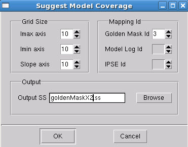
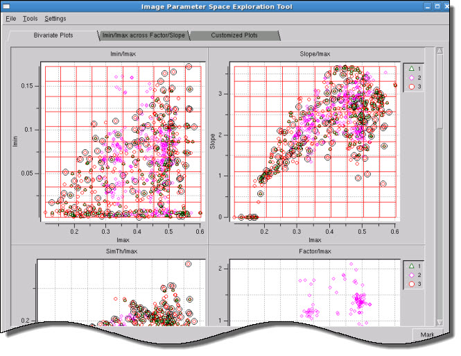

Use Calibre IPSE
to create a suggested sample spreadsheet from your golden mask file
by following this task.
Procedure
- Load the
golden mask Modelflow log into Calibre IPSE using the menu
item.
- Select
the menu
item. The following dialog box appears:
Figure 1. IPSE Suggest Model
Coverage Dialog
- Change the Golden Mask Id
field to match the proper line in the files list.
- Similar to the task “Including Golden Mask Patterns in the Output”, use the Grid Size settings
to limit the intervals of the grid selection criteria.
- Set an output name for the
new sample spreadsheet file.
- Click OK.
Results
Calibre IPSE outputs a coverage pattern
for the golden mask pattern, including a grid showing the granularity
of the Grid Size settings for selections.
Figure 2. Golden Mask Suggested
Coverage Grid